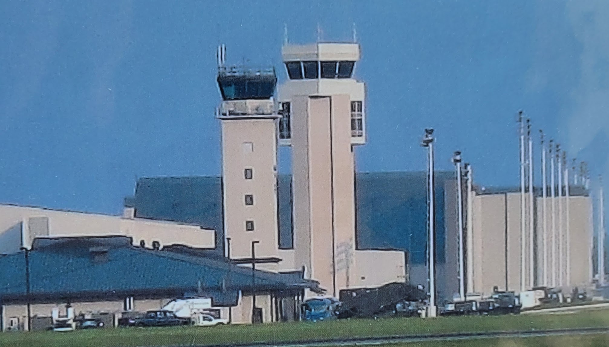
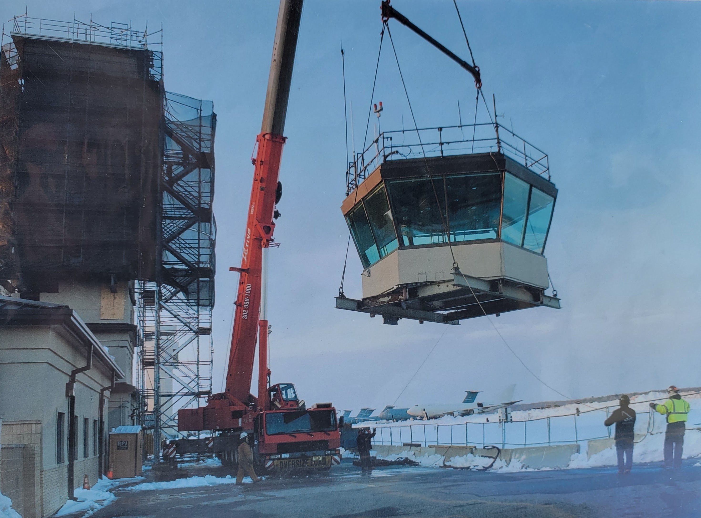
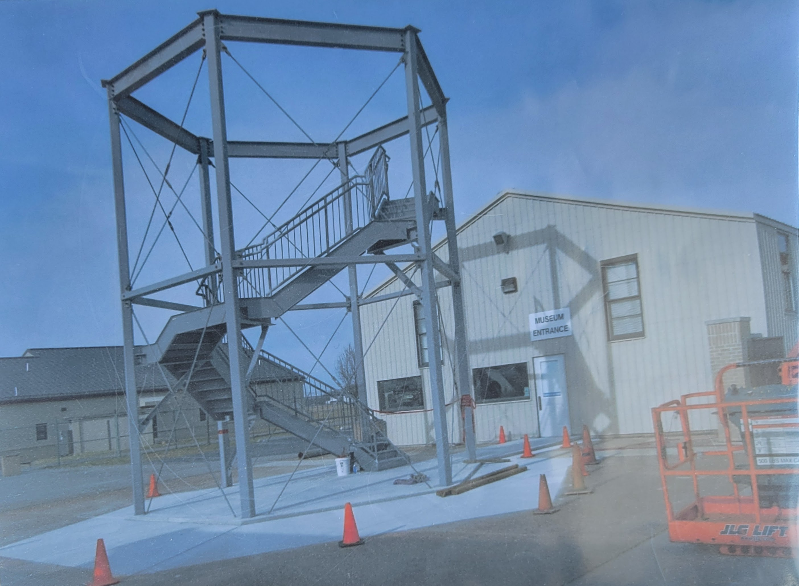
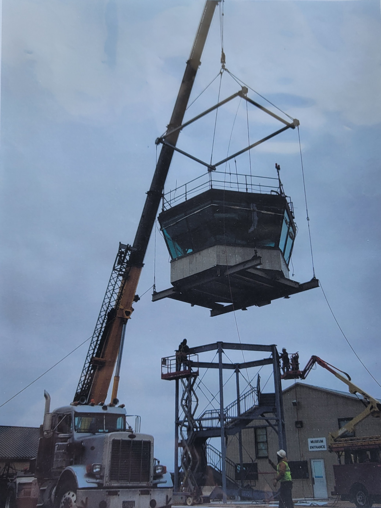

Built 1941 - 1942
Original Height - 83 feet and all the steps were as steep as the last 12 are today.
No elevator, no water cooler, no bathrooms, no place to prepare anything to eat.
3 work stations plus 1 supervisor.
In the earliest days of aviation, so few aircraft were in the skies that there was little need for ground-based control of aircraft. In Europe though, aircraft were often flown in different countries, and it soon became apparent that some kind of standard rules were needed. In 1919, the International Commission for Air Navigation (ICAN) was created to develop "General Rules for Air Traffic." Its rules and procedures were applied in most countries where aircraft operated.
The United States did not sign the ICAN Convention, but later developed its own set of air traffic rules after passage of the Air Commerce Act of 1926. This legislation authorzed the Department of Commerce to "establish air traffic rules for the navigation, protection, and identification of aircraft, including rules as to safe altitudes of flight and rules for the prevention of collisions between vessels and aircraft." The first rules were brief and basic. For example, pilots were told not to begin their takeoff until "there is no risk of collision with landing aircraft and until preceding aircraft are clear of the field."
As traffic increased, some airport operators realized that such general rules were not enough to prevent collisions. They began to provide a form of air traffic control (ATC) based on visual signals. The early controllers stood on the field, waving flags to communicate with pilots. Archie League was one of the system's first flagmen, beginning in the late 1920s at the airfield in St. Louis, Missouri.
AS more aircraft were fitted for radio communication, radio-equipped airport traffic control towers began to replace the flagmen. In 1930, the first radio-equipped control tower in the United States began operating at the Cleveland Municipal Airport. By 1932, almost all airline aircraft were being equipped for radio-telephone communication, and about 20 radio control towers were operating by 1935.
Further increases in flights created a need for ATC that was not just confined to airport areas but also extended out along the airways. In 1935, the principal airlines using the Chicago, Cleveland, and Newark airports agreed to coordinate the handling of airline traffic between those cities. In December, the first Airway Traffic Control Center opened at Newark, New Jersey. Additional centers at Chicago and Cleveland followed in 1936.
The early en route controllers tracked the position of planes using maps and blackboards and little boat-shaped weights that came to be called "shrimp boats." They had no direct radio link with aircraft but used telephones to stay in touch with airline dispatchers, airway radio operators, and airport traffic controllers. These individuals fed information to the en route controllers and also relayed their instructions to pilots.
In July 1936, en route ATC became a federal responsibility, and the first appropriation of $175,000 was made. The Federal Goverment provided "airway" traffic control service, but local government authorities where the towers were located continued to operate those facilities.
In August 1941, Congress appropriated funds for the Civil Aeronautics Administration (CAA) to construct and operate ATC towers, and soon the CAA began taking over operations at the first of these towers, with their number growing to 115 by 1944. In the postwar era, ATC at most airports was eventually to become a permanent federal responsibility. In response to wartime needs, the CAA also greatly expanded its en route air traffic control system. Women too, for the first time were trained as controllers during the war, and at their peak, represented well over 40 percent of the controller workforce.
The postwar years saw the beginning of a revolutionary development in ATC, the introduction of radar, a system that uses radio waves to detect distant objects. Originally developed by the British for military defense, this new technology allowed controllers to "see" the position of aircraft tracked on video displays. In 1946, the CAA unveiled an experimental radar-equipped tower for control of civil flights. By 1952, the agency had begun its first routine use of radar for approach and departure control. Four years later, it placed a large order for long-range radars for use in en route ATC.
Beginning in 1950, the CAA began consolidating some airport traffic control towers at smaller airports with airway communication stations, the forerunners of today's flight service stations. By 1958, it ran 84 of these combined station-towers, the last of which closed in 1981.
In 1960, the FAA began successful testing of a system under which flights in certain "positive control" areas were required to carry a radar beacon, called a transponder, that identified the aircraft and helped to improve radar performance. Pilots in this airspace were also required to fly on instruments regardless of the weather and to remain in contact with controllers. Under these conditions, controllers were able to reduce the separation between aircraft by as much as half the standard distance.
For many years, pilots had negotiated a complicated maze of airways. In September 1964, the FAA instituted two layers of airways, one from 1,000 to 18,000 feet (305 to 5,486 meters) above ground and the second from 18,000 to 45,000 feet (13,716 meters). It also standardized aircraft instrument settings and navigation checkpoints to reduce the controllers' workload.
Although experimental use of computers in ATC had begun as early as 1956, a determined drive to apply this technology began in the 1960s. To modernize the National Airspace System, the FAA developed complex computer systems that would replace the plastic markers for tracking aircraft. Instead, controllers viewed information sent by aircraft transponders to form alphanumeric symbols on a simulated three-dimensional radar screen. By automating some routine tasks, the system allowed controllers to focus on providing separation. These capabilities were introduced into the ATC system during the ten years that began in 1965.
The FAA established a Central Flow Control Facility in April 1970, to prevent clusters of congestion from disrupting the nationwide air traffic flow. This type of ATC became increasingly sophisticated and important, and in 1994, the FAA opened a new Air Traffic Control System Command Center with advanced equipment.
In January 1982, the FAA unveiled the National Airspace System (NAS) Plan. The plan called for modernized flight service stations, more advanced systems for ATC, and imporvements in ground-to-air surveillance and communication. Better computers and software were developed, air route traffic control centers were consolidated, and the number of flight service stations reduced. New Doppler radars and better transponders complemented automatic, radio broadcasts of surface and flight conditions.
The FAA recognized the need for further modernization of air traffic control, and in July 1988, selected IBM to develop the new multi-billion-dollar Advamced Automation System (AAS) for the Nation's en route ATC centers. AAS would include controller workstations, called "sector suites," that would incorporate new display, communications and processing capabilities. The system would also include new computer hardware and software to bring the air traffic control system to higher levels of automation.
In December 1993, the FAA reviewed its order for the planned AAS. IBM was far behind shedule and had major cost overruns. In 1994 the FAA simplified its needs and picked new contractors. The revised modernization program continued under various project names. Some elements met further delays. In 1999, controllers began their first use of an early version of the Standard Terminal Automation Replacement System, which included new displays and capabilities for approach contrl facilities. During the following year, FAA completed deployment of the Display System Replacement, providing more efficient workstations for en route controllers.
In 1994, the concept of Free Flight was introduced. It might eventually allow pilots to use onboard instruments and electronics to maintain a safe distance between planes and to reduce their reliance on ground controllers. Full implementation of this concept would involve technology that made use of the Global Positioning System to help track the position of aircraft. In 1998, the FAA and industry began applying some of the early capabilities developed by the Free Flight program.
Current studies to upgrade ATC include the Communication, Navigation and Surveillance for Air Traffic Management system that relies on the most advanced aircraft transponder, a global navigation satellite system, and ultra-precise radar. Tests are underway to design new cockpit displays that will allow pilots to better control their aircraft by combining as many as 32 types of information about traffic, weather, and hazards.
Building the tower. Circa 1941
Both towers, side by side.
Removing the old tower cap.
Building the current tower base.
Lowering the tower cap onto the current base.